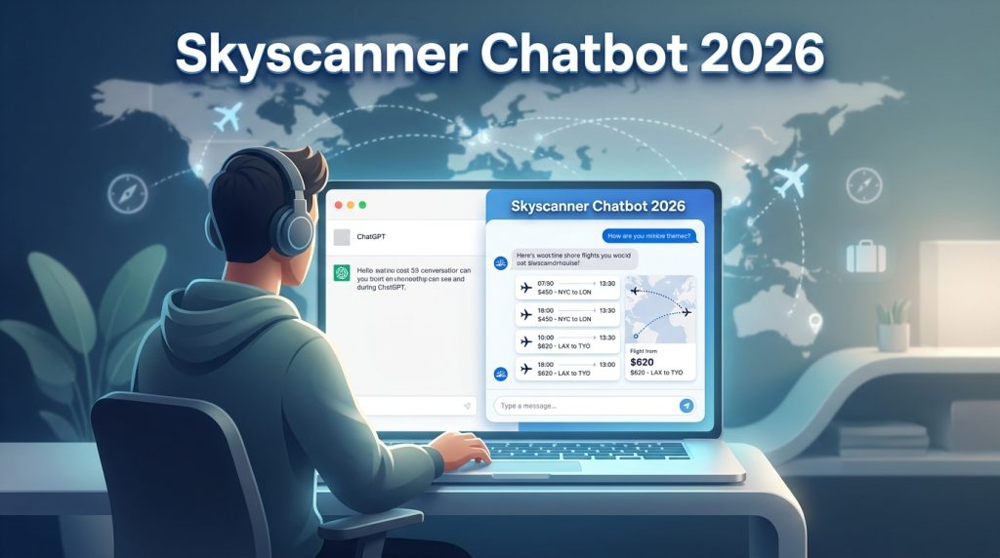
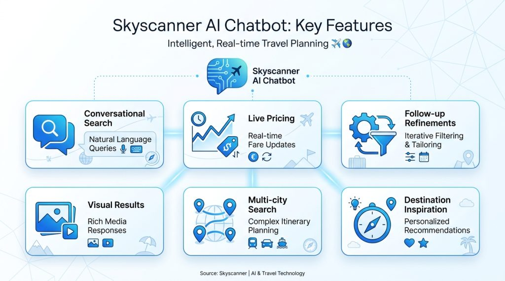
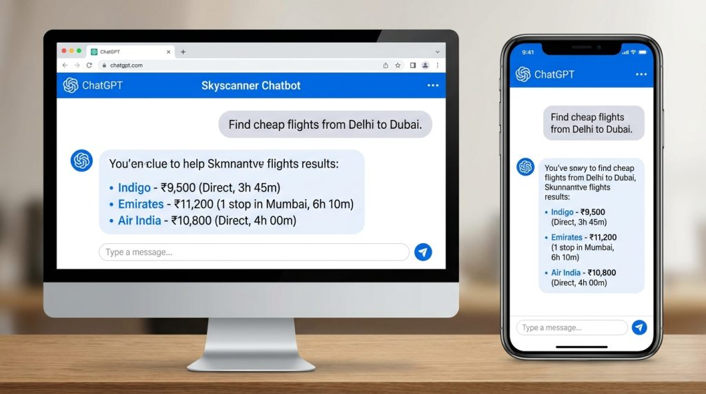
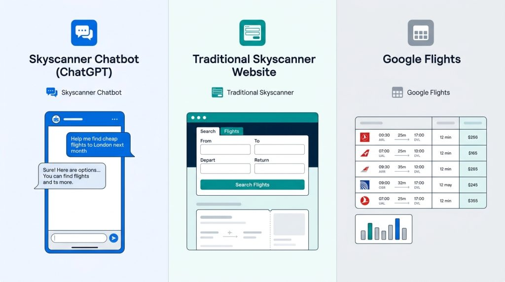

In 2026, booking flights has become significantly more conversational. Skyscanner, one of the world’s leading flight comparison platforms, launched a major AI upgrade by integrating its technology directly inside ChatGPT.
Instead of filling out traditional search forms, travelers can now simply type natural language requests like “Find the cheapest flight from Delhi to Dubai next month” and get live results instantly.
This development marks a big shift in how people search for flights. But is the Skyscanner Chatbot actually useful in 2026? How does it work? What are its real advantages and limitations?
In this detailed guide, we cover everything you need to know about the Skyscanner Chatbot 2026, including features, how to use it, pros and cons, and practical tips.

What is the Skyscanner Chatbot in 2026?
Skyscanner has evolved far beyond its original flight comparison website. In early 2026, the company launched its official app/integration inside ChatGPT. This allows users worldwide to search and compare flights using simple conversational prompts directly within ChatGPT.
Previously, Skyscanner offered Savvy Search — an AI-powered tool on its own platform for trip inspiration. The 2026 ChatGPT integration takes this further by bringing Skyscanner’s live pricing engine directly into the world’s most popular AI chatbot.
This means you no longer need to switch between tabs or fill complex filters. You can have a natural conversation with AI while getting accurate, real-time flight data powered by Skyscanner.
For Indian travelers, this is particularly useful for searching international routes from Delhi, Mumbai, Bangalore, Hyderabad, and other major cities using simple English or Hinglish-style prompts.
For a broader comparison of top AI chatbots and assistants available in 2026, check out our detailed guide on Best ChatGPT Alternatives in 2026.
Key Features of Skyscanner’s AI Integration

Here are the standout features of the Skyscanner Chatbot in 2026:
- Conversational Flight Search: Use natural language instead of rigid forms.
- Live Pricing Integration: Pulls real-time data from Skyscanner’s database.
- Follow-up Refinements: Change dates, class, stops, or airlines through follow-up messages.
- Visual Results: Displays flight options with prices, airlines, layovers, and duration inside the chat.
- Multi-city & Flexible Searches: Handles complex requests like “cheapest flight from India to Europe in September with one stop”.
- Savvy Search on Platform: AI destination inspiration tool available directly on Skyscanner app/website.
- Agentic Potential: Skyscanner is also working with OpenAI’s more advanced agent tools for future automation.
How to Use the Skyscanner Chatbot in ChatGPT? (Step-by-Step)

Using the Skyscanner integration is quite simple:
- Open ChatGPT (web or app). Make sure you have access to GPT-4o or the latest model.
- Go to the ChatGPT App Store or search for “Skyscanner” in the available apps/tools section.
- Add/Enable the Skyscanner app.
- Start a new chat and type a natural prompt, for example:
- “Find the cheapest round-trip flights from Delhi to Bangkok in July”
- “@skyscanner show me direct flights from Mumbai to Dubai next weekend”
- “Compare business class options from Bangalore to Singapore in August”
- Review the results shown in the chat.
- Refine your search by replying naturally, such as:
- “Show only direct flights”
- “Change dates to mid-August”
- “Find options under ₹25,000”
The chatbot understands context and maintains conversation history, making trip planning much smoother.
AI tools are increasingly being used not just for booking but also for creating detailed travel content and itineraries. Explore our roundup of Best AI Tools for Content Creation.
Advantages of Using Skyscanner Chatbot
- Faster and More Intuitive Search: No need to learn complex filters.
- Better for Complex Queries: Handles multi-city trips and flexible date requests well.
- Real-time Data: Results are pulled live from Skyscanner’s engine.
- Convenient Refinement: Easy to adjust searches through conversation.
- Great for Inspiration: Combined with Savvy Search for discovering new destinations.
- Accessible for Non-Tech Users: Natural language lowers the barrier.
- Time-Saving: Especially useful when planning last-minute or complex international trips from India.
Limitations and Drawbacks
While powerful, the Skyscanner Chatbot still has some limitations in 2026:
- Availability: The ChatGPT integration rolled out gradually (starting with certain regions like Middle East and expanding globally).
- Not a Full Booking Tool: It helps you find and compare options but redirects you to book on airline or partner websites.
- Occasional Inaccuracies: Like most AI tools, it can sometimes misunderstand very complex requests.
- Dependency on ChatGPT: You need a ChatGPT account (Plus recommended for best performance).
- Limited Customization: Advanced filters available on the main Skyscanner website may not be fully replicated yet in chat.
- Data Privacy: Sharing travel plans inside ChatGPT raises standard AI data concerns.
Specialized AI tools often perform better for niche use cases. See how custom AI solutions are built in our Free AI Plot Generator as an example of tailored conversational tools.
Skyscanner Chatbot vs Traditional Search vs Other AI Tools

| Feature | Skyscanner Chatbot (ChatGPT) | Traditional Skyscanner Website | Google Flights |
|---|---|---|---|
| Search Method | Natural language conversation | Form-based filters | Form + some AI suggestions |
| Ease of Use | Very High | Medium | Medium |
| Refining Searches | Excellent (follow-up messages) | Good | Good |
| Live Pricing | Yes | Yes | Yes |
| Best For | Quick & complex queries | Detailed comparison | Price tracking & date grids |
| Booking | Redirects externally | Redirects externally | Redirects externally |
Many travelers now use a combination — Skyscanner Chatbot for quick discovery and the main website for final detailed comparison.
Pro Tips for Getting the Best Results
- Be specific in your prompts (include cities, months, budget, and preferences).
- Use follow-up messages instead of starting a new chat.
- Cross-check final prices on the official Skyscanner website.
- Combine with Skyscanner’s Price Alerts for the best deals.
- For Indian routes, try prompts in both English and simple Hinglish.
- Use it early in the planning stage for inspiration, then switch to detailed tools.
The rise of AI in travel is also changing job roles in the industry. Read our analysis on Which Jobs Will AI Take Over and Which Are Safe in 2026.
Who Should Use the Skyscanner Chatbot?
Best for:
- Frequent travelers who want quick answers
- People planning complex or multi-city trips
- Users who prefer conversational interfaces
- Indian travelers searching international flights
Less ideal for:
- Users who need very advanced filtering
- Those who want to complete the entire booking inside one interface
- People uncomfortable using ChatGPT
Frequently Asked Questions (FAQ)
Q: Is the Skyscanner Chatbot free to use? A: Yes, the integration works inside ChatGPT. However, for the best experience and faster responses, a ChatGPT Plus subscription is recommended.
Q: Can I book flights directly through the chatbot? A: No. It helps you compare and find options, but you’ll be redirected to book on the airline or travel agency website.
Q: Does it work for domestic flights in India? A: Yes, it supports both domestic and international routes.
Q: How accurate are the prices shown? A: Prices are pulled live from Skyscanner’s database, so they are generally accurate at the time of search.
Q: Is Skyscanner Chatbot better than Google Flights? A: It depends. Skyscanner’s conversational interface is better for quick and natural searches, while Google Flights excels at visual date grids and price tracking.
Q: Will this replace the regular Skyscanner website? A: Not completely. The chatbot is an additional convenient channel, especially for discovery and quick searches.
Final Verdict
The Skyscanner Chatbot in 2026 represents a meaningful step forward in AI-powered travel search. The integration with ChatGPT makes flight discovery faster and more intuitive for millions of users.
While it’s not perfect yet and still redirects users for actual booking, it significantly improves the research phase of trip planning. For Indian travelers especially, being able to search flights conversationally in a familiar interface like ChatGPT is a welcome development.
If you frequently search for flights and value speed and simplicity, the Skyscanner Chatbot is worth trying in 2026.
Would you like us to create a ready-to-use prompt library for finding cheap flights using the Skyscanner Chatbot? Let us know in the comments!